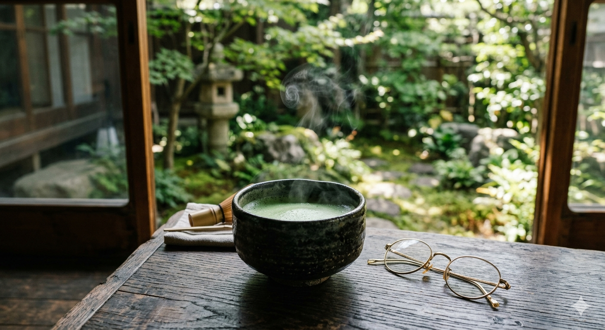

Як я спізнився на чайну церемонію, але знайшов друга
Дощ у Кіото починається несподівано. Саме в такий дощ я біг дерев'яними містками району Хіґасіяма, намагаючись встигнути на церемонію, яку замовляв за місяць. Мої золоті окуляри запотіли, карта намокла, а навігатор показував, що я рухаюсь у протилежний бік.
Зрештою я заблукав у крихітному провулку й постукав у двері невеличкого будиночку, сподіваючись запитати дорогу. Двері відчинив літній чоловік на ім'я Такеші. Він не говорив англійською, але побачив моє збентеження, усміхнувся й запросив усередину. Виявилося, він готував чай для себе. Ми просиділи дві години: він показував мені старі фотографії Кіото, а я малював йому на серветці карту України. Це була найкраща чайна церемонія в моєму житті — без правил, але з душею.